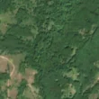
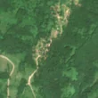

4,3 ha de pădure schimbată lângă Mărăști
Între vara lui 2025 și 11 mai 2026, pe aproximativ 4,3 ha de pădure din comuna Răcoasa, lângă Mărăști, județul Vrancea, imaginile Sentinel-2 arată că vegetația a dispărut sau s-a schimbat puternic. Nu pare o tăiere de lemn.
Autorizația de tăiere
nu e tăiere de pădure
Schimbarea nu pare tăiere de lemn, așa că autorizațiile de tăiere nu se aplică. Zona nu era pădure nici înainte: livadă, vie, tufăriș, construcții sau carieră.
Ce se vede în poze: În poza «după», zona marcată arată o fâșie îngustă și lungă de pământ gol, de culoare deschisă, care coboară pe o vale, în timp ce pădurea din jur rămâne verde. Forma neregulată, urmând panta, seamănă mai mult cu o alunecare de teren sau o ravenă decât cu o tăiere rasă obișnuită, deci nu pot afirma că a fost tăiere.


Înainte și după: Copernicus Sentinel-2, 10 m pe pixel, conturul zonei cu portocaliu. Poza detaliată (Esri World Imagery) e de acum 1–4 ani: arată ce era acolo înainte, nu tăierea.
Pe scurt
- Identificator
- 20260511_46059_26844
- Locul
- Mărăști, comuna Răcoasa, județul Vrancea (SIRUTA 177405)
- Coordonate (centru)
- 46.05856, 26.84430 · Google Maps · OpenStreetMap
- Suprafața
- 4,3 ha (din pixeli de 10 m; ± câțiva pixeli pe margine)
- Pădurea întreagă
- în vara lui 2025 (de atunci, nori sau iarnă)
- Prima imagine cu schimbarea
- 11 mai 2026
- Imagini în care se vede schimbarea
- 6
- Cât de sigur e semnalul din satelit
- medie
- Autorizația cea mai apropiată
- APV 2500126109200 · Ocolul Silvic Panciu-Valea Caregnei, valabilă 26 august 2025 – 15 decembrie 2025, la 346 m de zonă
- Terenul
- pădure de stat, după amenajamentul silvic publicat
- Garda Forestieră
- Focșani
Dacă vrei să verifici sau să sesizezi
- Pădurile din județul Vrancea sunt în grija Gărzii Forestiere Focșani, care controlează tăierile și dă amenzile.
- Autorizația găsită în zonă e emisă de Ocolul Silvic Panciu-Valea Caregnei.
- Formularul Gărzii Forestiere Naționale primește sesizări și fără nume. Trimite linkul acestei pagini, coordonatele și pozele. Dacă tăierea e în desfășurare, sună la 112.
- Autorizațiile și transporturile de lemn se pot căuta în Inspectorul Pădurii.
Pagina arată ce se vede din satelit și ce scrie în registrul public; nu e o dovadă în sine.
Cum citezi zona
Linkul acestei pagini nu se schimbă. Dacă zona iese vreodată de pe hartă, pagina rămâne, cu data și cu ce știam despre ea.
Pădurea RO, zona 20260511_46059_26844: 4,3 ha, Mărăști, comuna Răcoasa, județul Vrancea; schimbare văzută din satelit între vara lui 2025 și 11 mai 2026. https://iliemihai.github.io/padurea-ro/zona/20260511_46059_26844/ (consultat la [data]). Date: CC BY 4.0.
Datele zonei: GeoJSON · toate zonele: date deschise · licența CC BY 4.0.
Istoricul zonei pe hartă
Starea se poate schimba când registrul publică o autorizație sau când analistul vede poze mai bune. O ținem aici, ca un link citat să arate și ce spuneam atunci.
Pe hartă cel târziu din 5 noiembrie 2026.
- 5 noiembrie 2026 – azi · nu e tăiere de pădure
Detalii tehnice, pentru verificare
De ce acest nivel de încredere:
- văzută schimbată în 6 imagini diferite
- peste 3 ha
- pădurea din jur e neschimbată
- ultima dată am văzut-o intactă în vara lui 2025 (de atunci, nori sau zăpadă)
- fără părerea AI
Ce a văzut analistul cu context: Poza detaliată din 2023 arată coronament închis, iar în «după» apare o fâșie de sol dezgolit de aproximativ 500 m, lobată și ramificată, cu margini neregulate, care continuă în afara conturului pe aceeași vale. Aspectul se potrivește cu o alunecare sau un șiroire pe versant (pantă 15°) sau eventual cu un drum forestier nou, nu cu o parcelă tăiată compact. Autorizația APV de la 97 m nu se suprapune (0%) și a expirat în 2024, deci nu explică schimbarea. Drumul cel mai apropiat este la 978 m, dar în vedere largă fâșia pare să se apropie de o potecă la capătul de jos, ceea ce lasă deschisă și varianta de traseu de exploatare.
- Placa Sentinel-2
- 35TMM
- NDVI de referință
- 0.9
- NBR de referință
- 0.66
- Scăderea în pădurea din jur
- 0.04
- Persistență
- 0.99
- NDVI / NBR după
- 0.661 / 0.408
- Analistul cu context (model)
- altceva · 0.5
Cum se calculează fiecare: metodologia.
Pune harta zonei într-un articol
Copiază codul în articol (merge în majoritatea site-urilor de știri). Sau pune doar linkul: WhatsApp, Facebook și X arată singure poza zonei.